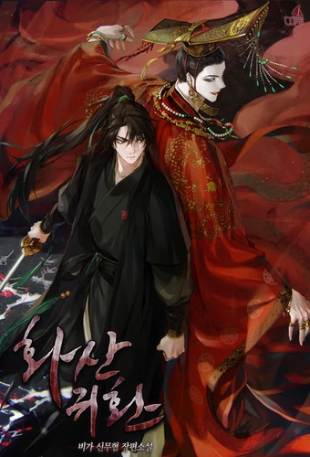

Hello...
I am Daud Anggoro
===About Me===
Halo!!! perkenalkan nama saya Daud Anggoro Seto
Saya adalah seorang mahasiswa jurusan TI di LP3I Surabaya dan adalah sekaligus penulis blog ini.
Sebelumnya, Saya dulu merupakan seorang yang lebih tertarik Seni seperti menggambar dan bermain musik daripada menghabiskan waktu didepan laptop terus menerus
Saya suka membaca buku Novel,Komik dan Sastra.
Dengan membuat blog ini saya ingin menunjukan ketertarikan dan hobi terbaru saya yaitu di dunia Proggramming!
Hope You Like It!
===My Blog===
 Return Of The Blossoming BladeMurid ke-13 dari Sekte Gunung Hua.
Salah satu Pendekar Pedang Generasi Ketiga Terhebat.
Master Pedang Bunga Plum, Chungmyung.
Setelah mengiris kepala Iblis Surgawi yang tiada taranya, yang melemparkan dunia ke dalam kekacauan, dia tidur nyenyak di puncak Seratus Ribu Pegunungan Besar. Melompat lebih dari seratus tahun, dia kembali dalam tubuh seorang anak.
Tapi apa? Gunung Hua menurun? Apa yang kau bicarakan!?
Wajar jika Anda ingin hidup jika Anda bangkrut.
"Menolak? Meskipun aku di sini? Siapa yang berani!”
Bunga prem akhirnya jatuh.
Tetapi ketika musim dingin berlalu dan musim semi tiba, bunga prem akan mekar kembali.
“Tapi aku akan mati dulu sebelum Gunung Hua dihidupkan kembali! Jika Anda akan bangkrut, sebaiknya lakukan dengan benar, bajingan!
Awal dari Master Pedang Bunga Plum, perjuangan sendirian Chungmyung untuk menyelamatkan Sekte Gunung Hua yang benar-benar merosot. Baca Selengkapnya
10 tahun yang lalu, setelah "Gate" yang menghubungkan dunia nyata dengan dunia monster dibuka, beberapa orang biasa menerima kekuatan untuk berburu monster di dalam Gerbang.
Mereka dikenal sebagai "Hunter".
Namun, tidak semua Pemburu kuat.
Nama saya Sung Jin-Woo, Hunter E-rank.
Saya seseorang yang harus mempertaruhkan nyawanya di Gate paling rendah,
Tidak memiliki keterampilan apa pun untuk ditampilkan, hampir tidak mendapatkan uang yang dibutuhkan dengan bertarung di Gate level rendah… setidaknya sampai saya menemukan katakombe tersembunyi dengan kesulitan tersulit dalam Gate peringkat-D!.
Pada akhirnya, saat aku menerima kematian, tiba-tiba aku menerima kekuatan aneh, log pencarian yang hanya bisa kulihat, rahasia naik level yang hanya aku yang tahu! Jika aku berlatih sesuai dengan questku dan berburu monster, levelku akan naik.
Berubah dari Hunter terlemah menjadi Hunter Rank-S terkuat!. Baca Selengkapnya